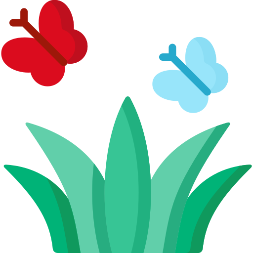
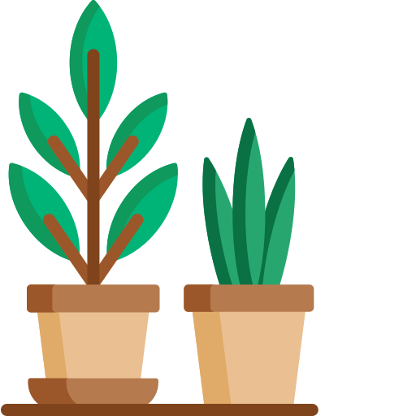

How to save water in the Garden?
In summer, water used outdoors can amount to 50 percent of the total used.
Grass

- Stop watering your lawn. It's ok to let your grass go brown during dry spells - it will bounce back as soon as it rains again.
- Hoses and sprinklers typically use about 1000 litres of water an hour. This is more than 12 baths.
- If you have to use a sprinkler, try to use it in the early morning/late afternoon, this is when evaporation rates are lowest.

Garden Equipment
- Pressure washers should be used sparingly or not at all. Look out for water-efficient models that are available.
- Attaching a trigger nozzle on your hosepipe will halve the amount of water used and help direct the flow to the root of your plants.
- Watering cans can significantly reduce the amount of water used (compared to sprinklers) whilst getting the desired amount to your plants.
- Water butts are a brilliant method to catch a large amount of rainwater that falls each year - it's free water.
Plants

- Lots of people use bathwater on their gardens, this is a brilliant idea. Please remember this is dirty water and should be used immediately, and never on fruit/ veg or near children.
- Use mulch and bark in your garden, it will help to reduce evaporation by up to 75%.
- Think about mixing some drought-resistant bedding and perennial plants to your garden to add a bit of diversity and resilience in the summer.
- Sprinkle hydrogels in the garden and in hanging baskets. These drought relief products are known to aid the slow release of water over time, reducing the need to water the garden frequently.
- Check the weather before you water. Many plants can go at least a day without watering, and if you know rain is forecast for tomorrow then it's ok to give it a miss today.